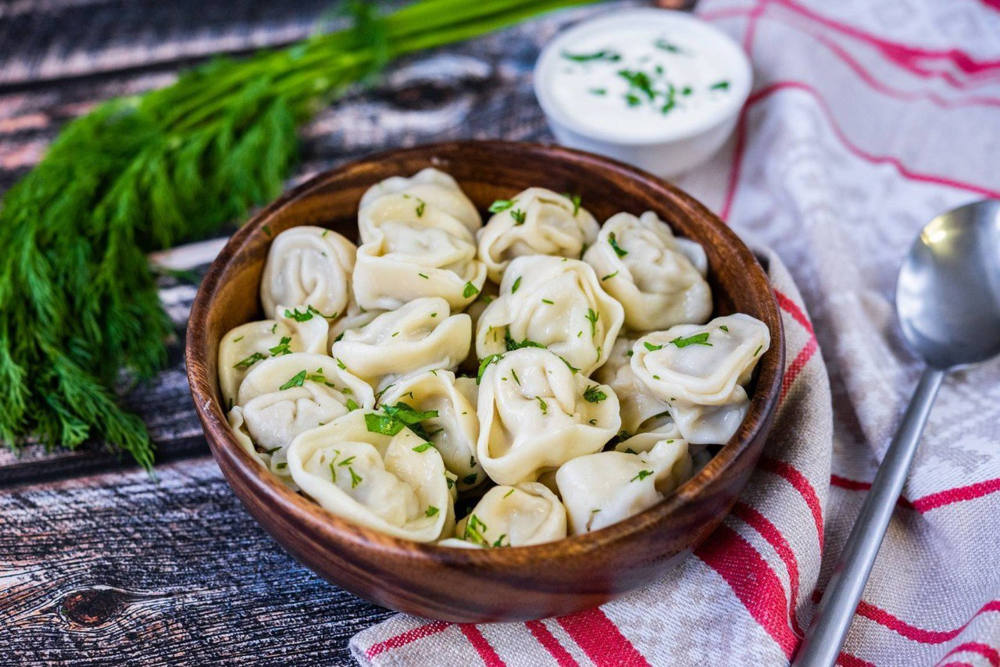

Пельмени - это блюдо, распространённое в традиционной кухне народов
России: русской, удмуртской, коми и некоторых других финно-угорских
народов. Изготавливаются в виде термически обработанных изделий из
пресного теста с начинкой из рубленого мяса или рыбы.
